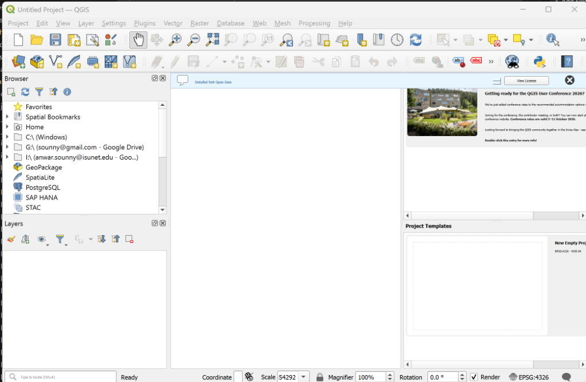
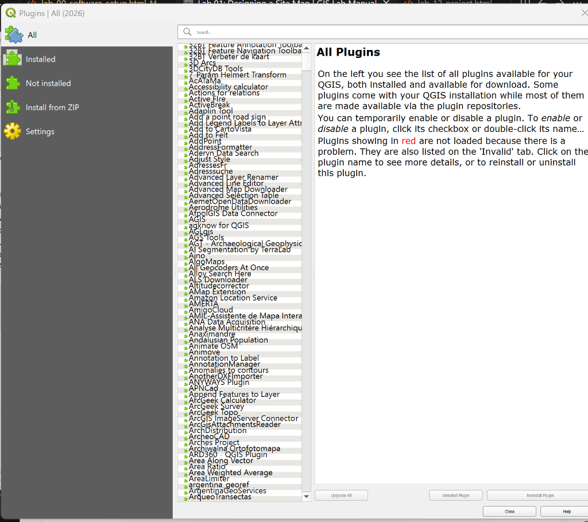
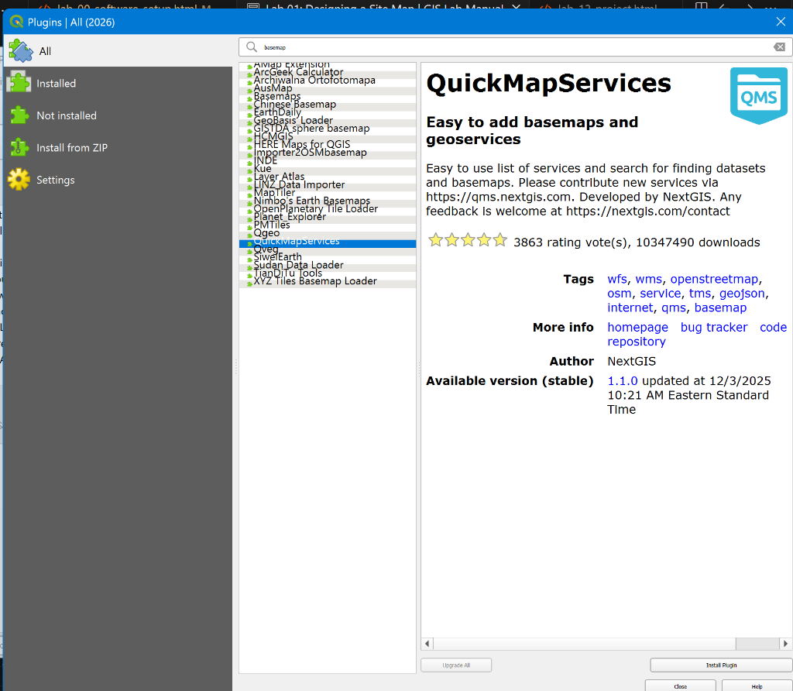
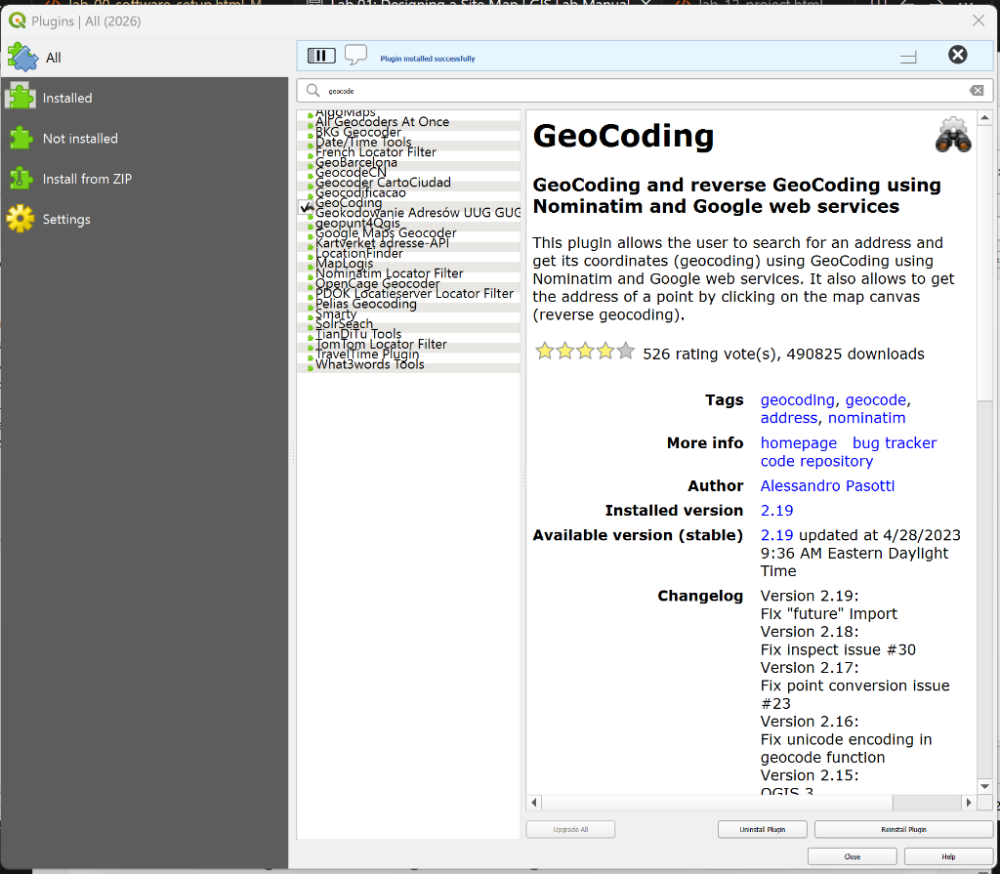

🎯 Learning Objectives
- Navigate the GIS map interface (Pan, Zoom, Identify).
- Find a specific location using search tools.
- Create a Layout suitable for printing (PDF/Image).
- Add essential map elements: Title, North Arrow, Scale Bar, and Author Name.
📂 Scenario & Requirements
You have been hired as a "Campus Mapper." Your client (me, your instructor) needs a simple yet professional Site Map of a location of your choice. This could be your university campus, your neighborhood park, or even your hometown center.
The goal is not complex analysis; the goal is communication. Can you produce a clean, readable map?
🛠️ Step-by-Step Instructions
Select your preferred GIS platform:
Explore and Locate
Open your project from Lab 00. Use the Locate tool (magnifying glass) at the top right to search for your chosen location.
Change your Basemap: Go to the Map Tab → Basemap. Choose "Imagery Hybrid" or "Topographic".
Create a Layout
A "Map" is for working data; a "Layout" is for printing.
- Go to Insert Tab → New Layout. Select "Letter (8.5 x 11) Landscape".
- Go to Insert Tab → Map Frame. Draw a rectangle on the page to place your map.
Add Map Elements
Use the Insert Tab to add the following:
- North Arrow: To show orientation.
- Scale Bar: To show distance/size.
- Text (Title): Name your place (e.g., "Southwestern University Campus").
- Dynamic Text (Service Layer Credits): Acknowledges the data source.
- Text (Author): "Created by [Your Name]".
Export
Go to the Share Tab → Export Layout.
Format: JPG or PDF. DPI: 300. Save it to your computer.
Start QGIS & Install Plugins
1. Launch QGIS Desktop: Open the program from your Start Menu (Windows) or Applications (Mac). You should see a blank canvas.

QGIS uses plugins to extend its functionality. We need tools for Basemaps and Geocoding.
2. Go to Plugins → Manage and Install Plugins.

3. Search for and install QuickMapServices (for basemaps).

4. Search for and install Geocoding (for finding addresses).

Add Basemap & Zoom
1. Click the Add Map Service icon (added by QuickMapServices) or go to Web → QuickMapServices.
2. Choose OSM Standard. This streams data without downloading it.
3. Zoom to Extent: Use the Zoom tool (magnifying glass) and draw a box around your area of interest (e.g., Texas) to zoom precisely.
Geocoding (Find Location)
1. Go to Plugins → Geocoding → Geocoding.
2. Type an address (e.g., "Austin, Texas").
3. Only choose the result that has the correct hierarchy (e.g., Travis County). Click OK.
4. A point is created! Double-click it in the Layers panel to change its Symbology (e.g., big green dot) or turn off labels.
Create Print Layout
1. Go to Project → New Print Layout. Name it.
2. Use the Add Map tool to draw a box on the blank page. Your map view appears.
3. Add Elements: Use the sidebar tools to draw boxes for North Arrow, Scale Bar, and Label (Title).
4. Customize fonts and sizes in the Item Properties tab.
Export to PDF
1. Once happy, click Export as PDF (top toolbar).
2. Ignore the "WMS Server" warning if it appears (just limits data download).
3. Save it to your desktop.
Pro Tip: PDF exports often render sharper than the screen preview!
Setup Map
Go to ArcGIS Online → Map Viewer.
Search for your location in the top right search bar.
Change Basemap: Click the "Basemap" icon (left dark toolbar) and choose "Imagery" or "Navigation".
Add Sketch Layers
Click "Sketch" (Pencil icon) on the right toolbar.
Use the "Stamp" or "Text" tool to place a label on the map naming the site (Site Title). Add another text box with your Name.
Print / Export
On the left toolbar, click "Print" (Printer icon).
- Title: Enter your Map Title.
- Layout: Choose "Letter ANSI A Landscape".
- Format: PDF or JPG.
Click "Export". The file will generate after a few seconds—click the result to download it.
✅ Submission & Assessment
To pass Lab 01, submit your exported map file (JPG/PDF). It will be graded on:
- Completeness: Does it show the location clearly?
- Elements: Does it have a Title, North Arrow, Scale Bar, and Author Name?
- Aesthetics: Is the text readable? Is the map centered?